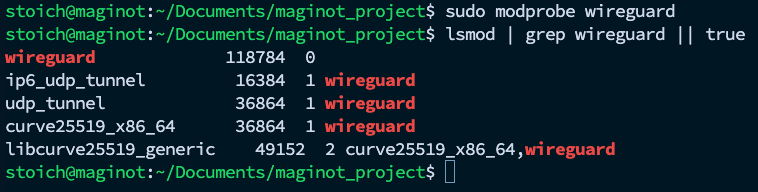
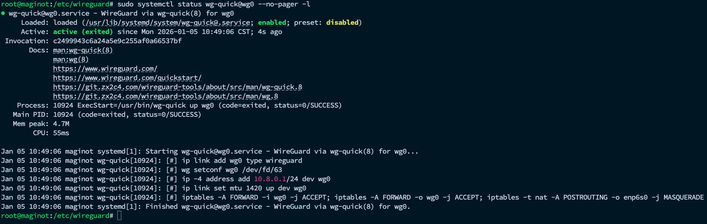
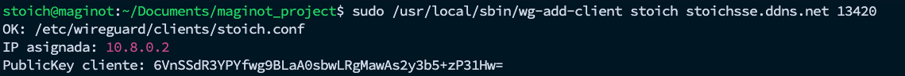

VPN con WireGuard
Contexto y objetivo
Por razones de seguridad, el servidor MAGINOT no debe ser accesible directamente desde Internet (por ejemplo, evitando publicar SSH, paneles web o puertos de servicios hacia el exterior). En su lugar, el acceso remoto se realiza exclusivamente a través de una VPN, de modo que solo equipos autenticados puedan entrar a la red privada del servidor y consumir servicios internos como si estuvieran en la red local.
Por ello, se implementó WireGuard como VPN en Rocky Linux, configurado para escuchar en el puerto 13420/UDP, con el fin de que toda administración y acceso remoto a MAGINOT (SSH, RStudio, Grafana, etc.) ocurra únicamente a través del túnel VPN, reduciendo la exposición pública de servicios y centralizando el control de acceso.
Instalación de WireGuard
sudo dnf -y update
sudo dnf -y install epel-release
sudo dnf -y install wireguard-toolsCargar el módulo del kernel y verificar
sudo modprobe wireguard
lsmod | grep wireguard || true
La presencia del módulo wireguard en lsmod confirma que el kernel puede crear interfaces WireGuard (por ejemplo, wg0). Los módulos udp_tunnel e ip6_udp_tunnel son dependencias relacionadas con encapsulamiento UDP.
Identificar la interfaz de salida (NAT)
WireGuard requiere conocer la interfaz por la que sale el tráfico para configurar NAT.
IFACE=$(ip route get 1.1.1.1 | awk '{print $5; exit}')
echo "Interfaz de salida: $IFACE"Salida esperada:
Interfaz de salida: enp6s0Crear llaves del servidor
Cambiar a modo root
mkdir -p /etc/wireguard
cd /etc/wireguard
umask 077
wg genkey | sudo tee server.key >/dev/null
cat server.key | sudo wg pubkey | sudo tee server.pub >/dev/null
echo "Server public key:"
sudo cat /etc/wireguard/server.pubLa public key del servidor (server.pub) se utiliza para configurar clientes.
Crear la interfaz wg0 (configuración del servidor)
Se utilizará la red VPN 10.8.0.0/24:
Servidor VPN:
10.8.0.1Puerto:
13420/UDPNAT saliendo por:
enp6s0
Crear /etc/wireguard/wg0.conf:
SERVER_PRIV=$(sudo cat /etc/wireguard/server.key)
sudo tee /etc/wireguard/wg0.conf >/dev/null <<EOF
[Interface]
Address = 10.8.0.1/24
ListenPort = 13420
PrivateKey = ${SERVER_PRIV}
# NAT + forwarding
PostUp = iptables -A FORWARD -i %i -j ACCEPT; iptables -A FORWARD -o %i -j ACCEPT; iptables -t nat -A POSTROUTING -o enp6s0 -j MASQUERADE
PostDown = iptables -D FORWARD -i %i -j ACCEPT; iptables -D FORWARD -o %i -j ACCEPT; iptables -t nat -D POSTROUTING -o enp6s0 -j MASQUERADE
EOF
sudo chmod 600 /etc/wireguard/wg0.conf /etc/wireguard/server.keyHabilitar IP forwarding
echo 'net.ipv4.ip_forward = 1' | sudo tee /etc/sysctl.d/99-wireguard.conf
sysctl --system | grep -i ip_forward || trueSalida esperada :
net.ipv4.ip_forward = 1Abrir el puerto 13420/udp en firewalld
firewall-cmd --permanent --add-port=13420/udp
firewall-cmd --reload
firewall-cmd --list-ports | tr ' ' '\n' | grep 13420 || trueActivar WireGuard (wg-quick@wg0)
sudo systemctl enable --now wg-quick@wg0
sudo systemctl status wg-quick@wg0 --no-pager -l
Estado de WireGuard
wg show
ss -lunp | grep 13420 || true
ip -br a | grep wg0 || trueResultado: WireGuard quedó habilitado en MAGINOT: interfaz wg0 activa, IP asignada y puerto 13420/UDP en escucha.
Crear clientes por nombre
Script de alta: wg-add-client (crea peer + archivo NOMBRE.conf)
Este script:
asigna automáticamente la siguiente IP libre en
10.8.0.0/24,genera llaves del cliente,
crea el archivo
NOMBRE.conf(full-tunnel),agrega el peer a
wg0.confcon comentario,reinicia
wg-quick@wg0.
Instalar el script
sudo tee /usr/local/sbin/wg-add-client >/dev/null <<'EOF'
#!/usr/bin/env bash
set -euo pipefail
NAME="${1:-}"
ENDPOINT_HOST="${2:-}"
PORT="${3:-13420}"
if [[ -z "$NAME" || -z "$ENDPOINT_HOST" ]]; then
echo "Uso: sudo wg-add-client NOMBRE ENDPOINT_HOST [PUERTO]"
echo "Ejemplo: sudo wg-add-client karen stoichsse.ddns.net 13420"
exit 1
fi
NAME="$(echo "$NAME" | tr ' ' '_' | tr -cd '[:alnum:]_-')"
WGDIR="/etc/wireguard"
WGIF="wg0"
NET="10.8.0"
CLIENT_DIR="${WGDIR}/clients"
# checks mínimos
[[ -r "${WGDIR}/server.pub" ]] || { echo "ERROR: falta ${WGDIR}/server.pub"; exit 1; }
[[ -r "${WGDIR}/${WGIF}.conf" ]] || { echo "ERROR: falta ${WGDIR}/${WGIF}.conf"; exit 1; }
mkdir -p "$CLIENT_DIR"
chmod 700 "$CLIENT_DIR"
cd "$WGDIR"
umask 077
# Encontrar IPs ya usadas (si no hay matches, no fallar)
USED=$(
{ grep -oE 'AllowedIPs = 10\.8\.0\.[0-9]+/32' "${WGDIR}/${WGIF}.conf" 2>/dev/null || true; } \
| awk -F'[./]' '{print $4}' | sort -n | uniq
)
IP=2
while echo "$USED" | grep -qx "$IP"; do IP=$((IP+1)); done
[[ $IP -le 254 ]] || { echo "ERROR: No hay IPs libres en ${NET}.0/24"; exit 1; }
# Evitar duplicados por nombre
if [[ -e "${CLIENT_DIR}/${NAME}.conf" ]]; then
echo "ERROR: ya existe ${CLIENT_DIR}/${NAME}.conf"
exit 1
fi
# Generar llaves del cliente
wg genkey | tee "${CLIENT_DIR}/${NAME}.key" >/dev/null
cat "${CLIENT_DIR}/${NAME}.key" | wg pubkey > "${CLIENT_DIR}/${NAME}.pub"
# Crear config full-tunnel (Internet por VPN)
cat > "${CLIENT_DIR}/${NAME}.conf" <<CFG
[Interface]
PrivateKey = $(cat "${CLIENT_DIR}/${NAME}.key")
Address = ${NET}.${IP}/24
DNS = 1.1.1.1
[Peer]
PublicKey = $(cat "${WGDIR}/server.pub")
Endpoint = ${ENDPOINT_HOST}:${PORT}
AllowedIPs = 0.0.0.0/0
PersistentKeepalive = 25
CFG
chmod 600 "${CLIENT_DIR}/${NAME}.conf" "${CLIENT_DIR}/${NAME}.key" "${CLIENT_DIR}/${NAME}.pub"
# Agregar peer al servidor (persistente)
cat >> "${WGDIR}/${WGIF}.conf" <<PEER
# ${NAME}
[Peer]
PublicKey = $(cat "${CLIENT_DIR}/${NAME}.pub")
AllowedIPs = ${NET}.${IP}/32
PEER
systemctl restart "wg-quick@${WGIF}"
echo "OK: ${CLIENT_DIR}/${NAME}.conf"
echo "IP asignada: ${NET}.${IP}"
echo "PublicKey cliente: $(cat "${CLIENT_DIR}/${NAME}.pub")"
EOF
sudo chmod +x /usr/local/sbin/wg-add-clientCrear un cliente (por nombre)
Ejemplo:
sudo /usr/local/sbin/wg-add-client stoich stoichsse.ddns.net 13420
El archivo quedará en:
/etc/wireguard/clients/stoich.confListar clientes:
ls -lh /etc/wireguard/clients/Confirmar que el peer quedó cargado:
sudo wg showCopiar el .conf a un home (para transferencia a teléfono/PC)
sudo cp /etc/wireguard/clients/stoich.conf /home/stoich/
sudo chown stoich:stoich /home/stoich/stoich.conf
chmod 600 /home/stoich/stoich.conf
ls -lh /home/stoich/stoich.confRevocar un cliente (baja)
- Eliminar archivos del cliente:
sudo rm -f /etc/wireguard/clients/stoich.{conf,key,pub}Eliminar el bloque del peer en el servidor:
- Buscar
# stoichen/etc/wireguard/wg0.confy borrar ese bloque completo[Peer].
- Buscar
Reiniciar WireGuard y verificar:
sudo systemctl restart wg-quick@wg0
sudo wg show